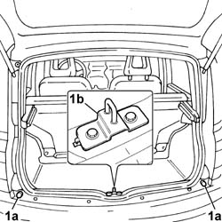
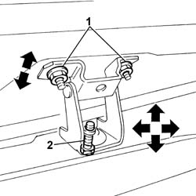

7015A14 tailgate - adjust centring and profile - includes hinge and compartment seal adaptation
- Path
- Procedures > 70 FITTINGS > 7015 TAILGATE/ > 7015A tailgate assembly > 7015A14 tailgate - adjust centring and profile - includes hinge and compartment seal adaptation
- Kind
- repair procedure (removal / refitting; the operation number is the code)
- Applies to
- all engines; all production periods
- Interactive page
- https://sloeber94.github.io/elrnDB-fPnd/en/#/2753120
Applies to: all engines; all production periods
Lift the tailgate.
1. If necessary, adjust the buffers (1a) and the position of the lock striker (1b) as described in the procedure:
7015A10 tailgate - adjust striker and adapt seal if necessary

Applies to: all engines; all production periods
If the adjustments described above are insufficient, adjust the tailgate hinge position as described below.
1. Loosen the tailgate nuts and adjust the tailgate position, using the slotted holes on the hinges.
Tighten the nuts fixing the tailgate to the recommended torque.
 | Fastening | Component | Ø | Value (daNm) |
|---|---|---|---|---|
- | Nut | TAIL GATE HOUSING COMPARTMENT | M6 | 0.8 |
If necessary, adjust the position of the lock striker as described in the procedure:
7015A10 tailgate - adjust striker and adapt seal if necessary
If this adjustment is not sufficient, proceed as follows:
Remove the roof lining as described in the procedure:
7040H10 roof panel lining - r r
2. Loosen the hinge fixing bolts.
Adjust the position of the tailgate.
Tighten the hinge retaining bolts to the specified torque.
| Fastening | Component | Ø | Value (daNm) |
|---|---|---|---|---|
- | Bolt | TAILGATE HINGES | M8 | 3.0 |
If necessary, touch up the paintwork in the hinge area.
If necessary, adjust the position of the lock striker as described in the procedure:
7015A10 tailgate - adjust striker and adapt seal if necessary

Applies to: all engines; all production periods
Fit the roof lining as described in the procedure: